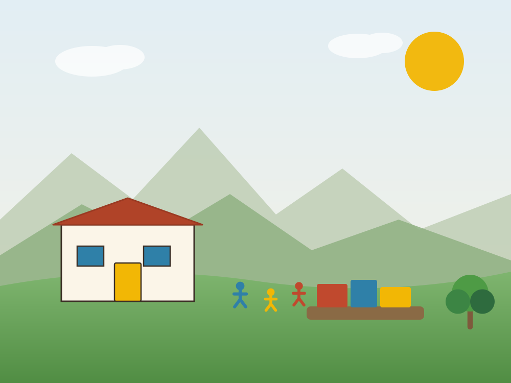
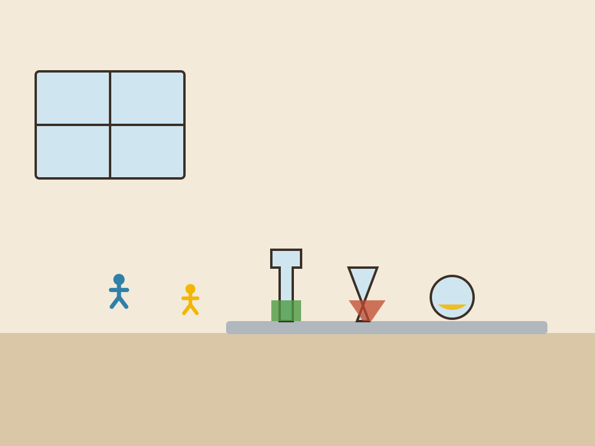
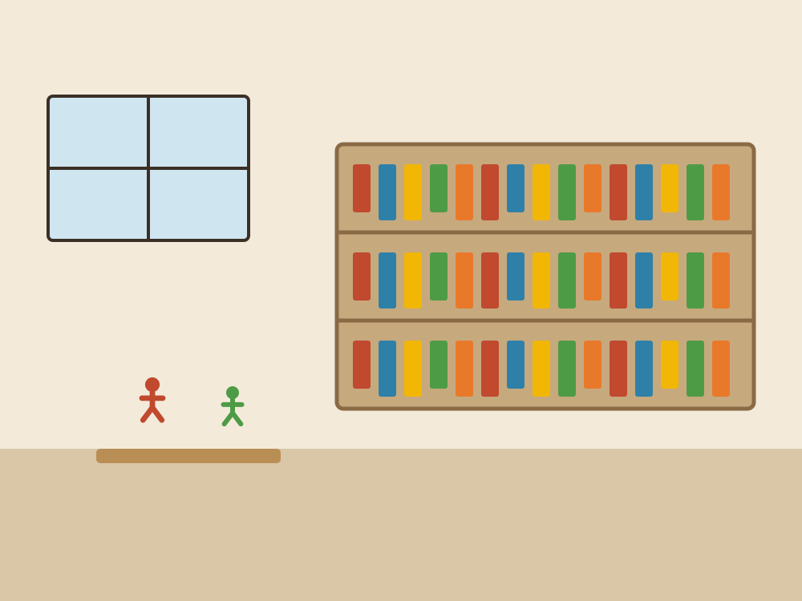

Niveles educativos
De pre-jardín a grado 11º, en el mismo campus
Catorce grados y un solo proyecto pedagógico. Los estudiantes que entran a los tres años pueden graduarse en el mismo lugar donde aprendieron a leer, acompañados por un equipo que los conoce desde siempre.

3 a 5 años · Pre-jardín, Jardín y Transición
Preescolar
La primera infancia no se apura. En estos tres años el trabajo central es el vínculo seguro, el juego, el movimiento y el desarrollo del lenguaje. La lectoescritura y el número aparecen cuando el niño está listo, no cuando lo marca el calendario.
Trabajamos con ambientes preparados por rincones, materiales manipulativos, rutinas estables y mucho tiempo al aire libre. La transición al grado primero es gradual y acompañada.
- Juego libre y juego dirigido con intención pedagógica.
- Motricidad fina y gruesa, y desarrollo sensorial.
- Aproximación natural a la lectura, la escritura y el número.
- Inglés lúdico, música y expresión corporal.
- Acompañamiento en la adaptación y en la autonomía cotidiana.

6 a 10 años · Grados 1º a 5º
Básica primaria
Es la etapa de las grandes herramientas: leer con comprensión, escribir con voz propia y pensar matemáticamente. Se trabaja por proyectos que integran varias áreas alrededor de una pregunta real del grupo.
El plan lector institucional y el trabajo con material concreto en matemáticas son los dos ejes de estos cinco años.
- Lengua castellana con biblioteca de aula y escritura creativa.
- Matemáticas con material concreto antes que con algoritmo.
- Ciencias naturales y sociales por proyectos de investigación.
- Inglés, artes plásticas, música y educación física.
- Círculos de convivencia semanales en todos los grados.

11 a 14 años · Grados 6º a 9º
Básica secundaria
La adolescencia pide desafíos reales y adultos que sostengan. Se profundiza en cada disciplina con docentes especializados, sin perder el trabajo por proyectos ni el vínculo con el director de grupo.
Aparecen el laboratorio, la investigación con método, el debate argumentado y las primeras responsabilidades comunitarias dentro del colegio.
- Áreas obligatorias con docentes por especialidad.
- Laboratorio de ciencias y proyectos de investigación escolar.
- Tecnología e informática con uso responsable de herramientas digitales.
- Arte, teatro y música con muestra pública semestral.
- Gobierno escolar y participación en el consejo estudiantil.

15 a 17 años · Grados 10º y 11º
Educación media
Los dos últimos años combinan la exigencia académica que pide la educación superior con el acompañamiento vocacional que pide la vida. Preparación específica para las Pruebas Saber 11 sin convertir el año en un simulacro permanente.
Cada estudiante desarrolla un proyecto de grado propio y cumple su servicio social obligatorio en organizaciones de la comunidad.
- Preparación Saber 11 con simulacros y refuerzo por área.
- Proyecto de grado con asesor asignado.
- Servicio social obligatorio (80 horas).
- Orientación vocacional y acompañamiento a la admisión universitaria.
- Profundización en inglés para pruebas estandarizadas.
Resultados
Nuestros promedios en las Pruebas Saber 11
Por encima del promedio nacional en las cinco áreas evaluadas.
| Área evaluada | Promedio institucional | Escala |
|---|---|---|
| Inglés | 68 | 0 – 100 |
| Lectura crítica | 66 | 0 – 100 |
| Matemáticas | 65 | 0 – 100 |
| Ciencias naturales | 63 | 0 – 100 |
| Sociales y ciudadanas | 63 | 0 – 100 |
Un día en el colegio
Así se organiza la jornada
Los horarios cambian por nivel, pero la estructura del día es común: encuentro, trabajo profundo, cuerpo, alimento y cierre.
| Franja | Momento | Qué ocurre |
|---|---|---|
| 7:00 – 7:30 | Llegada y círculo | Acogida, asamblea de grupo y acuerdos del día. |
| 7:30 – 9:30 | Trabajo profundo | Bloque largo de proyecto o área central, sin interrupciones. |
| 9:30 – 10:15 | Descanso y refrigerio | Juego libre y movimiento al aire libre. |
| 10:15 – 12:00 | Áreas y talleres | Inglés, artes, ciencias, deporte o laboratorio según el día. |
| 12:00 – 1:00 | Almuerzo | Comedor escolar y turnos de servicio. |
| 1:00 – 3:00 | Tarde de proyectos | Trabajo por proyectos, refuerzo y acompañamiento individual. |
| 3:00 – 3:30 | Cierre | Recogida de espacios, cierre de grupo y salida de rutas. |
Horario de referencia. La jornada de preescolar y la jornada de la mañana tienen una estructura más corta.
¿En qué grado entraría tu hija o tu hijo?
Escríbenos con la edad y el grado que cursa actualmente y te confirmamos la disponibilidad de cupo.